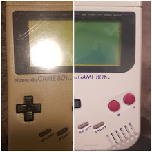
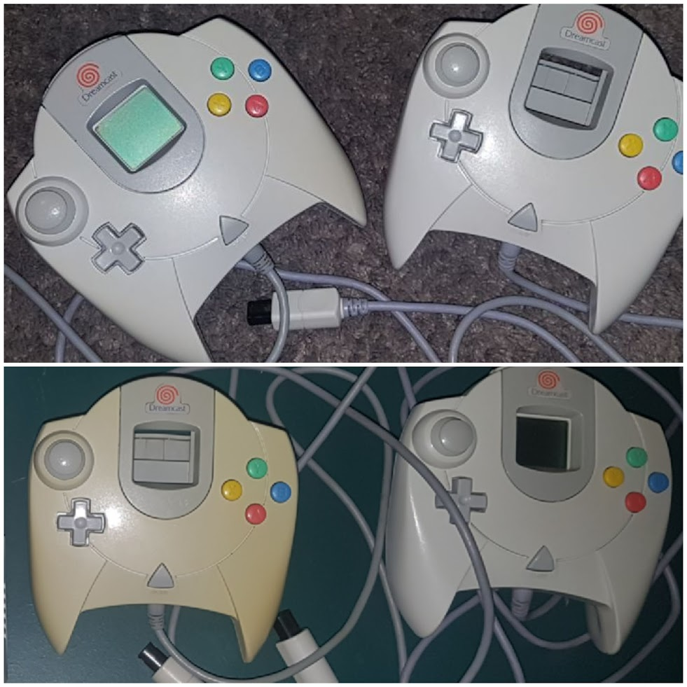

Welcome to your intro in Restoration!
Welcome to your intro to restoration! Restoring old consoles comes in many ways. One of the ways we will be beginning our journey in restoration is whitening consoles and electronics. Whitening yellowed plastic on these devices is not as hard as it seems. Its escentially bromine in the old plastic that rose to the surface by UV light and many other conditions. Below are many resources that will help you get started and complete your goal!
Video Tutorial on Whitening Here!
Step by step tutorial to get you started! Press the hyperlink!
Restoration Tutorial!
Here is some of my successful attemps at whitening!


Click here to get back to the home page or navigate on the menu bar! Contact Me Click Me